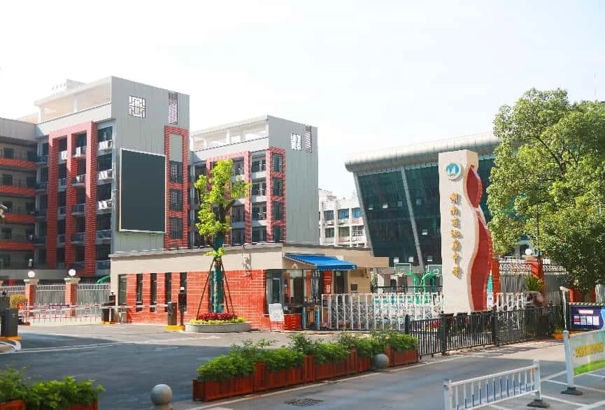
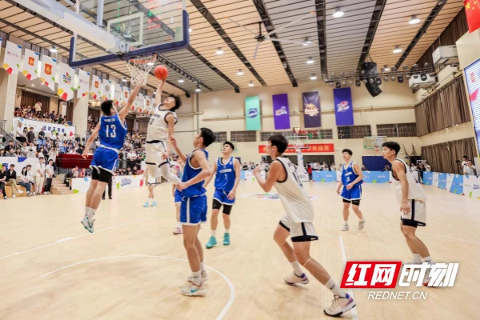
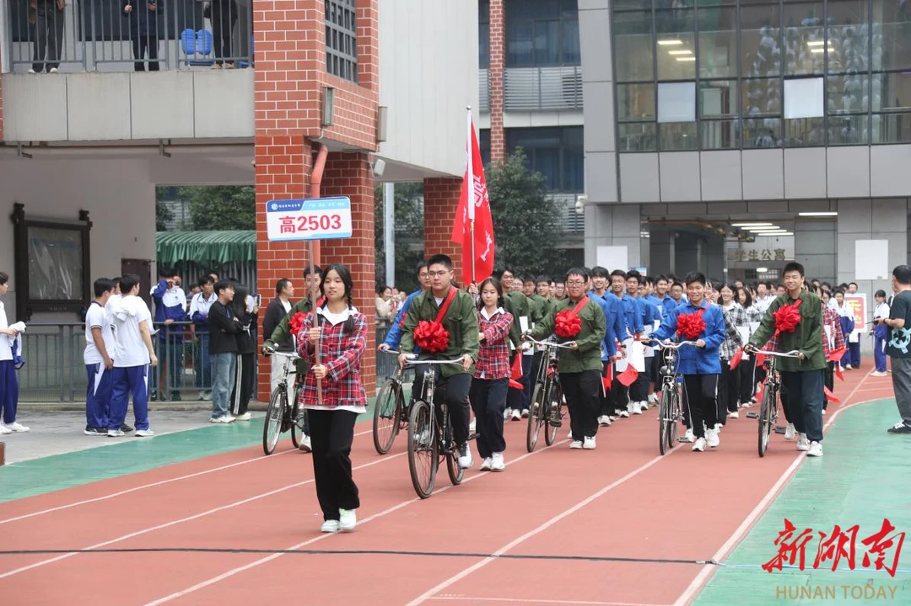
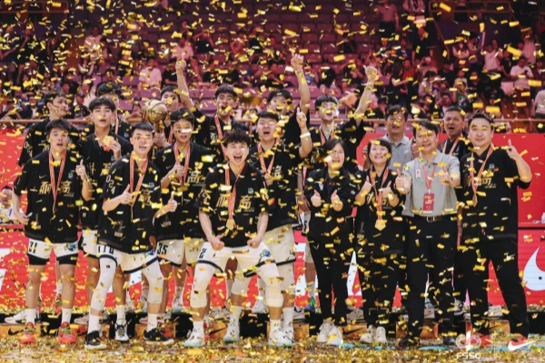
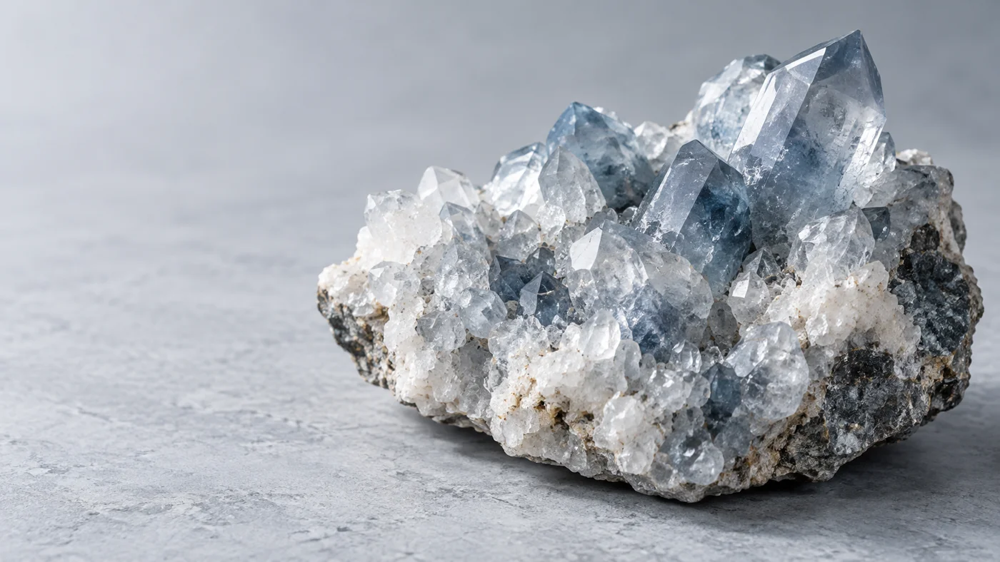
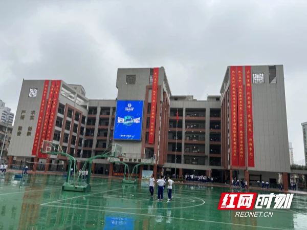
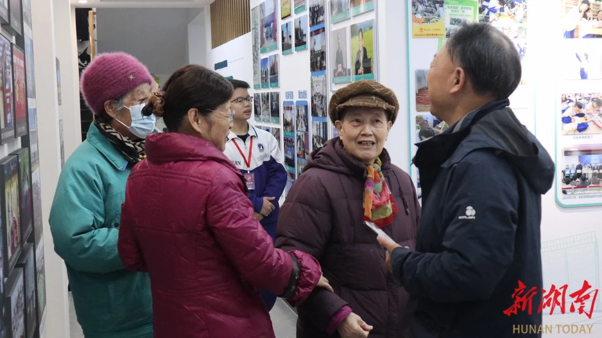

校园，是成长的起点。

在2023至2024赛季中国高中篮球联赛中，地中男篮捧起全国冠军奖杯。
从1955年走来，以扎实的育人实践，书写属于地中的成长故事。

把严谨求实的科学精神，融入课堂、探索与每一次动手实践。
学校的育人故事在长沙起笔，从此与一代代学子的成长相伴。

学校获授湖南省示范性普通高级中学，在办学道路上继续前行。
与长沙市雅礼中学缔结合作联盟，让优质教育资源连接更多成长。
走过七十年，始终关爱每一位学生，把每一个新的开始写进未来。
观察、实验、创造。让知识走出课本，让问题带来新的发现。
在拼搏与协作中，学会迎接人生的每一个回合。
让阅读、表达与艺术，成为通向宽广内心的路径。

从校园走向生活，在每一次真实的尝试中体会责任与协作。
在教室，在球场，在每一次好奇与尝试里。
让对未来的想象，从一次真实的了解开始。
严格 · 勤奋 · 求实 · 创新
试试“招生”“篮球”或“校园”